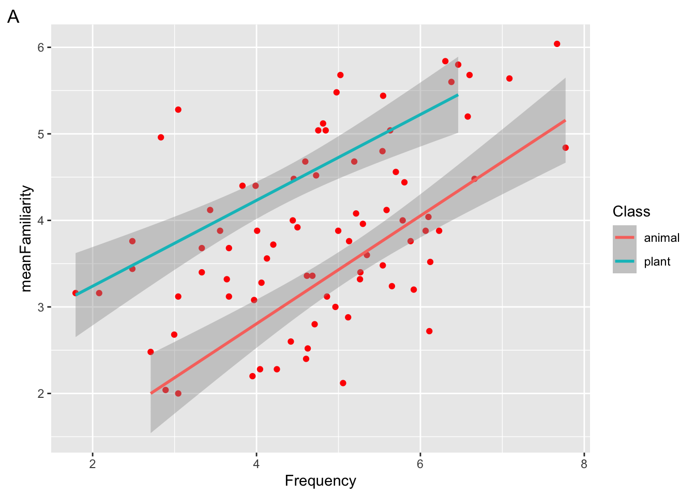

library(ggplot2)
library(languageR)Lab 1
R Basics & Data Visualization
To learn to program in R (or any language), you can read about how to do it, and watch someone else do it; but the only way to really learn is to do it yourself. Create some data structures, try some stuff, and see what happens! Here are some practice quiz questions to guide your learning. We will go over the solutions to these in lab.
Tip
More than one answer may be correct!
R Basics
Google Colab
True or false? We can start a new R notebook in Google Colab with
File > New notebookFor problem sets, how will you submit your colab notebook for grading?
What version of R is Google Colab running? Hint: use
sessionInfo().What is the relationship between R and Google Colab?
What happens to files you upload to google colab when the Runtime environment is restarted?
The very basics
Which of the following are expressions?
Which of the following are valid variable names in R?
Suppose we open a new colab notebook and run the following code block. What will be returned?
x <- 1 + 2 y <- 0 + 3 ls()Which of the following will load the
emopackage into the current environment?Which of the following occur in the code block below?
# compute the mean of x and y mean(c(x,y))
Vectors
Which of the following returns the vector
20 22 24 26Suppose we construct a vector with
c(1, "two", 3, 4, 5, 6)and assign it tox. What will the following code block return?typeof(x)What is the previous question an example of?
What will the following code block return?
x <- 1:4 y <- matrix(x, ncol=2, nrow=2) typeof(y)What will the following code block return?
x <- c() length(x)Given the following vector, what will
as.logical(x)return?x <- c(1, 0, 1, 0)
Given the following vector, what will
as.double(x)return?x <- c("one", "two", "three")What happens if you add a vector of numbers to a single number in the following expression?
c(1, 3, 5) + 1What happens if you multiply a vector times another vector?
c(1, 3, 5) * c(10, 100, 1000)Suppose we run the following code. What will
any(x)return?x <- c(1, 5, 11) > 10
Missing Values
Warning
We didn’t cover missing values in class, but they are an important thing for the data scientists to understand! Play around and see what you can find out about them here.
Suppose we run the following code. What will
is.na(y)return?y <- c(25, 25, NA, 36)Suppose we run the following code. What will
is.null(y)return?y <- c()Suppose we run the following code. What will
mean(y)return?y <- c()
Visualization
Practice your new ggplot skills with these practice exam questions!
Setup
We will continue working with the ratings dataset from the visualization lecture (part of the languageR package).
Load the libraries:
And inspect the structure of the ratings dataset:
str(ratings)'data.frame': 81 obs. of 14 variables:
$ Word : Factor w/ 81 levels "almond","ant",..: 1 2 3 4 5 6 7 8 9 10 ...
$ Frequency : num 4.2 5.35 6.3 3.83 3.66 ...
$ FamilySize : num 0 1.39 1.1 0 0 ...
$ SynsetCount : num 1.1 1.1 1.1 1.39 1.1 ...
$ Length : int 6 3 5 7 9 7 6 6 3 6 ...
$ Class : Factor w/ 2 levels "animal","plant": 2 1 2 2 2 2 1 2 1 1 ...
$ FreqSingular : int 24 69 315 26 19 24 53 74 155 37 ...
$ FreqPlural : int 42 140 231 19 19 6 78 77 103 14 ...
$ DerivEntropy : num 0 0.562 0.496 0 0 ...
$ Complex : Factor w/ 2 levels "complex","simplex": 2 2 2 2 2 2 2 2 2 2 ...
$ rInfl : num -0.542 -0.7 0.309 0.3 0 ...
$ meanWeightRating: num 1.49 3.35 2.19 1.32 1.44 ...
$ meanSizeRating : num 1.89 3.63 2.47 1.76 1.87 ...
$ meanFamiliarity : num 3.72 3.6 5.84 4.4 3.68 4.12 2.12 5.68 3.2 2.2 ...Basic ggplot
Fill in the blanks below with one of the following words:
data,aesthetics,geom.The basic ggplot involves: (1) using your , (2) defining how variables are mapped to visual properties (), and (3) determining the geometrical object that a plot uses to represent data ()
When ggplot2 maps a categorical variable to an aesthetic, it automatically assigns a unique value of the aesthetic to each level of the variable. What is this process called?
The code below generated which of the following figures?
ggplot( data = ratings, mapping = aes(x = Frequency, y = meanFamiliarity) ) + geom_point(mapping = aes(color = Class)) + geom_smooth(method = "lm") + theme_classic(base_size=20)Suppose we want to map the variable
Complexto the color aesthetic in a scatterplot. Which of the following arguments could we pass togeom_point()?To adjust the size of the font to 20pt in the complete theme
theme_minimal(), what argument should we include?Which geoms are depicted in the following figure?
Which geoms are depicted in the following figure?
Plot-to-Code Matching
Exercise 1
Given code blocks a, b, and c; and the plot below:
# CODE BLOCK a ---------------------------#
ggplot(
data = ratings,
mapping = aes(x = Frequency, y = meanFamiliarity)
) +
geom_point(color = "blue")
# CODE BLOCK b ---------------------------#
ggplot(
data = ratings,
mapping = aes(x = Frequency, y = meanFamiliarity, color = "blue")
)
# CODE BLOCK c ---------------------------#
ggplot(
data = ratings,
mapping = aes(x = Frequency, y = meanFamiliarity)
) +
geom_point()Which of the code blocks above generate the plot ?
In the plot above, is the color aesthetic mapped, set, or both?
In the plot above, which of the following aesthetics should we set to make the points more transparent?
In plot A above, which of the following would change the x axis label to “FQ”?
Exercise 2
Given the following plot:
In the plot above, which geom(s) are used to represent the data?
True or false, the blue line in the plot above is mapped to the Class aesthetic?
In the plot above, which of the following variables is mapped to the x aesthetic?
True or false, in the plot above, the default statistical transformation in the geom responsible for the red dots is “identity”.
Exercise 3
Suppose we run the following code.
ggplot(
data = ratings,
mapping = aes(x = Frequency, y = meanFamiliarity, color = Class)
) +
geom_point() +
geom_smooth(method = "lm", color = "red") 
Which of the following plots will be returned?
Which aesthetic is mapped and which is set?
Which aesthetic is global and which is local?
Exercise 4
Suppose we run the following code block
ggplot(
data = ratings,
mapping = aes(x = Class, fill = Complex)
) +
geom_bar() 
Which plot will be returned?
What would happen if we added the layer
scale_fill_manual(values = c("green", "orange"))to the following plot?What argument could we add to
geom_bar()to add a black border around the bars?
Exercise 5
Consider the following plot
To generate the facets in the plot above, which of the following lines of code must be included?
Which of the following geoms are added to the plot above?
Which built-in theme is applied to the following plot?